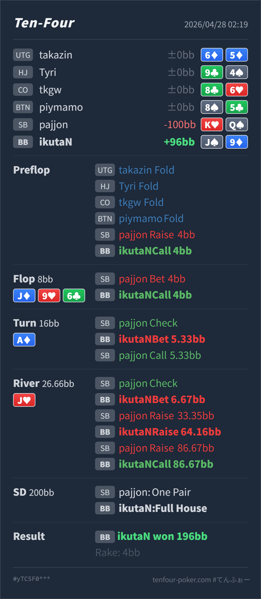

Preflop
やや薄いが許容J♠9♦ は blind-vs-blind では defend 候補ですが、offsuit で実現率が高くないため境界です。
主論点は、SB 4BB open に BB J♠9♦ で call し、flop J♦ 9♥ 6♣ の two pair から river J♥ で full house になったあと、check-raise 合戦でどこまで value を取りにいくかです。結論は、postflop はかなり良いです。特に river の bet/call は自然です。ただし、preflop の J9o defend は SB の 4BB open に対してやや薄く、river の再レイズは相手が trips を過大評価する pool では利益的ですが、強い相手には上位 full house へ当たりやすい点を意識したいです。
J♠9♦K♥Q♠J♦ 9♥ 6♣ / A♦ / J♥J9o は BB vs SB open の defend 候補ですが、相手 size が 4BB と大きいので境界寄りです。flop call、turn small bet、river value bet は自然です。J♦ 9♥ 6♣ で Hero は top two pair です。SB の half pot c-bet には raise も call も候補で、call は相手の overpair、top pair、overcard bluff を残せます。A♦ は SB range にも強いカードですが、SB check 後は Hero の two pair がかなり value を持ちます。5.33BB の小さめ bet は、A hit、Jx、9x、overpair から薄く取る設計として自然です。J♥ で Hero は full house です。小さく打って check-raise を誘発した点は実戦的です。SB の再リレイズ all-in まで来ると、理論上は AJ/AA など上位 full house も濃くなりますが、必要勝率が非常に低くなるので最後の call は当然です。J♠9♦K♥Q♠4BB, BB callJ♦ 9♥ 6♣ / A♦ / J♥4BB, BB call5.33BB, SB call6.67BB, SB raise 33.35BB, BB raise 64.16BB, SB raise 86.67BB, BB call
やや薄いが許容J♠9♦ は blind-vs-blind では defend 候補ですが、offsuit で実現率が高くないため境界です。
J♦ 9♥ 6♣良い
Hero は top two pair で、value の中心です。
A♦良い
Hero はまだ強い two pair です。A hit や Jx から value を取れます。
J♥良いが再レイズは相手依存
Hero は J full of 9 の full house です。非常に強い value hand ですが、AJ/AA には負けます。
良い
Hero は負ける combo もあるものの、降りるには強すぎます。
| 論点 | その場で起きがちな見え方 | どこがズレやすいか | 次回の基準 |
|---|---|---|---|
J9o の BB defend | blind-vs-blind なので広く defend してよさそうに見える | BB vs SB は広く守れますが、4BB open は価格が悪く、offsuit の下側はかなり削られます。J9o は defend 候補ではあるものの、自動 call ではありません。 | SB open が大きいときは、baseline より offsuit 下限を少し締める |
| river full house の再レイズ | full house なのでどこまでも上げ切ってよさそうに見える | J9 は非常に強いですが、river check-raise にさらに 3bet して、相手が 4bet all-in する range は本来かなり強いです。AJ/AA は上位 full house で、こちらを上回ります。 | 相手が trips を過大評価するなら再レイズ、強い相手の 4bet jam は上位 boat 多めとして見る。ただし pot odds が良ければ最後は call |
| ストリート | その時点の見え方 | 実ハンドの位置づけ | 評価 | その場の一手 |
|---|---|---|---|---|
| Preflop | SB の 4BB open は通常より大きく、BB は position ありでも defend 下限を少し締めます。 | J♠9♦ は blind-vs-blind では defend 候補ですが、offsuit で実現率が高くないため境界です。 | やや薄いが許容 | 相手が大きく open するなら fold も自然です。call するなら postflop で強く当たったときに取り切る前提です。 |
Flop J♦ 9♥ 6♣ | SB は overpair、top pair、overcard、gutshot を持ち、BB は two pair、set、pair + draw を広く持てます。BB 側にもかなり強い hand があります。 | Hero は top two pair で、value の中心です。 | 良い | raise で value/protection も取れますが、call で SB の広い c-bet range を残すのも自然です。 |
Turn A♦ | A は SB の high-card range に当たりやすい一方、SB check で強さは少し抑えられます。BB は flop call 後に two pair / set / draw を持てます。 | Hero はまだ強い two pair です。A hit や Jx から value を取れます。 | 良い | 小さめ bet は自然です。より大きく打ってもよいですが、相手の弱い pair や KQ/QT を残す意味では今回の size も筋が通ります。 |
River J♥ | SB check 後、BB は trips 以上を多く持ちます。SB にも AJ/KJ/QJ/JT、slowplay、まれな AA が残ります。 | Hero は J full of 9 の full house です。非常に強い value hand ですが、AJ/AA には負けます。 | 良いが再レイズは相手依存 | 小さく bet して raise を誘うのは良いです。check-raise への 3bet は、相手が trips や bluff を過剰に入れるなら利益的です。強い相手には call 止めも候補です。 |
| River vs all-in | SB がさらに押し返す range は本来かなり強く、上位 full house が濃くなります。ただし pot が巨大で、追加 call 額に対する必要勝率はかなり低いです。 | Hero は負ける combo もあるものの、降りるには強すぎます。 | 良い | 最後の call は当然です。ここで fold はしません。 |
J9o は BB vs SB では守れることがありますが、SB の open が 4BB なら境界 hand として扱います。value raise する と 4bet jam まで来た相手 range を読む は分けて考えます。K♥Q♠ で river check-raise から all-in まで進んでいます。この pool でこのような過剰 bluff / 過剰リレイズがあるなら、Hero の river 3bet/call はかなり利益的です。AJ/AA 寄りに絞られるなら、J9 は最初の check-raise に call 止めする選択も持っておくとよいです。